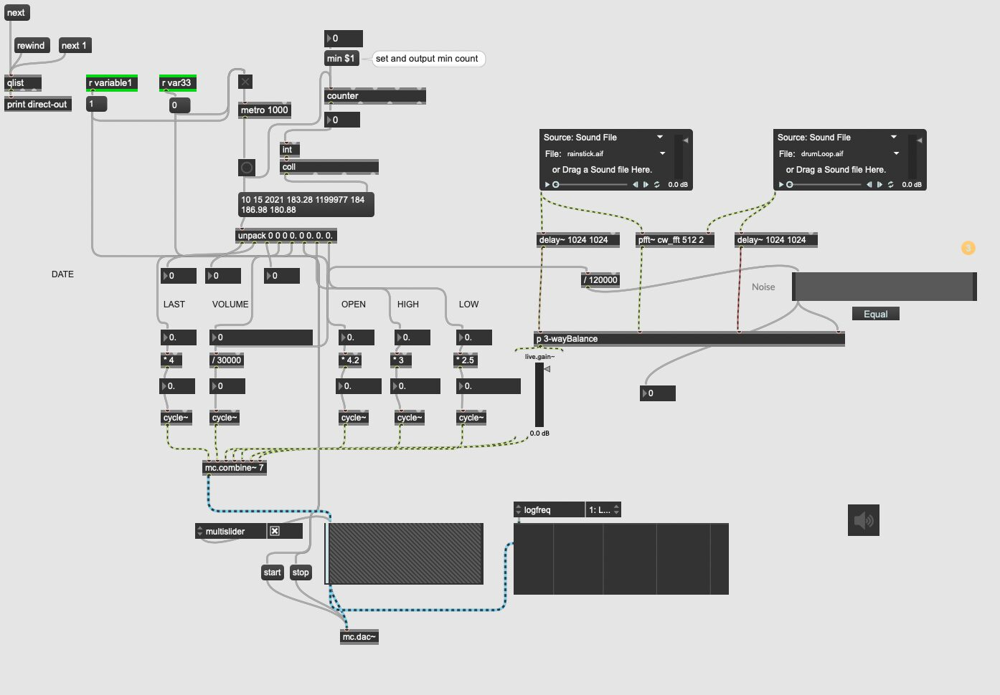
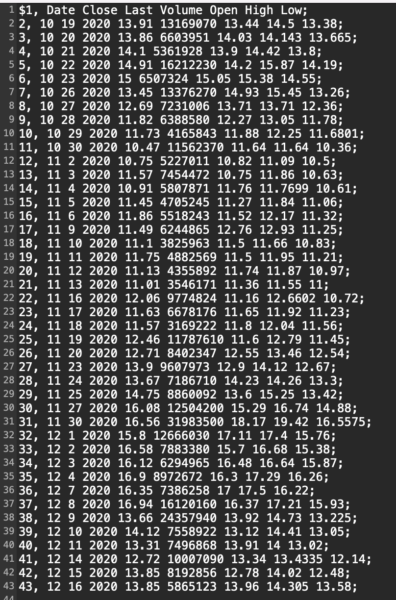
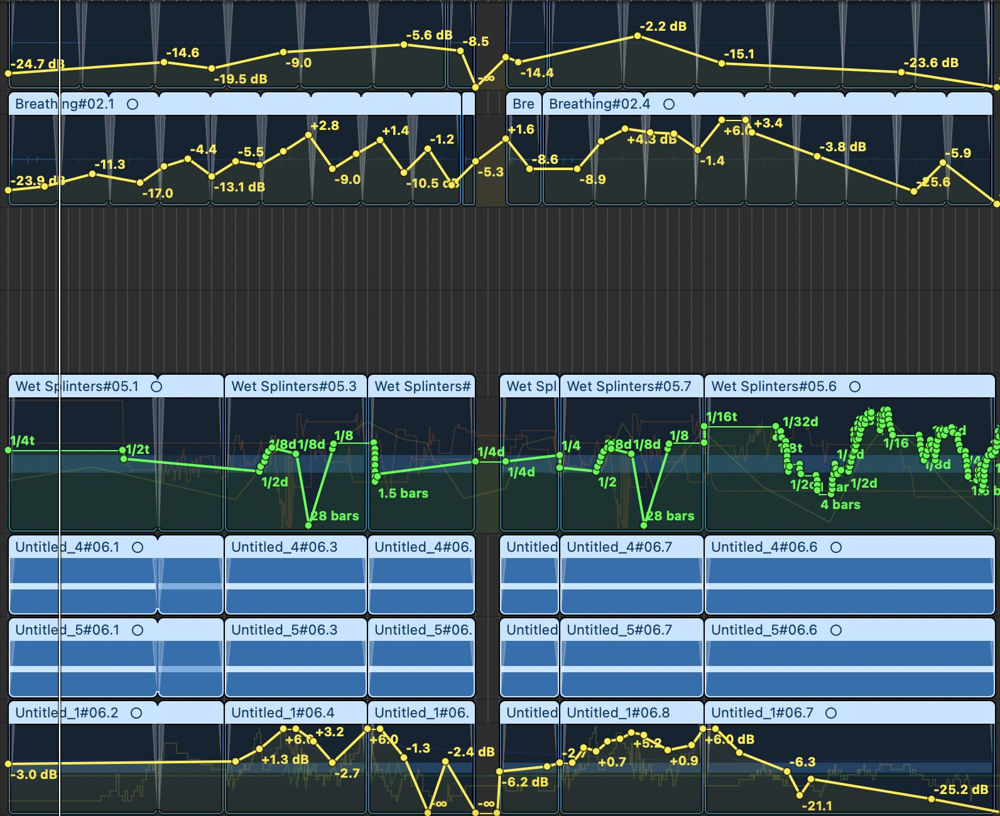
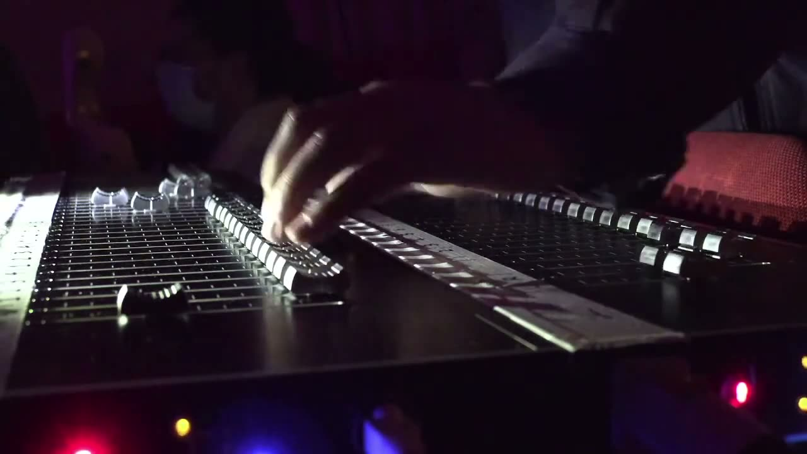

The Fragile Value of Nothing -- Developing from Storytelling Through Sonification
Project Description
When the opportunity arose to compose a piece based around the concept of sonification, I immediately started to consider what the advantages and disadvantages of using this approach and method might be; much has already been created using sonification as a form of composition and scientific application, but the concept is relatively new and the various approaches used are vast (Worrall, 2019) - with no single defined operational approach, or fixed method in which it should be done. This can be seen as both beneficial to the composer and something of an obstacle.
After much consideration, it became apparent that storytelling, description, and merging, as a method of reducing the acidic nature of raw data sets we are often surrounded by, were areas in which sonification could be used as a particularly effective compositional tool - due to the ability of sound to auditory scenes (Bregman, 1990). Sonification could, in fact, be considered as a way in which the gap between often inaccessible conceptual aural art and unappealing data set representation is harmonised and further develop for better accessibility, understanding and education. The concept of ‘analogic representation’[1] and ‘sonic plots’[2] were descriptors my work aimed to explore.
Type of submission
Option 1: “New NIME” - traditional NIME music sessions aimed at showcasing pieces performed or composed with new interfaces for musical expression.
Requirements
The piece is of a duration of around 5 minutes and simply requires a pair of stereo speakers.
Program Notes
In January of 2021 and during lockdown, an internet subculture emerged with the intention of causing disruption to the US Stockmarket and everything they felt it stood for. Armed with only each other's speculation based on ill-considered analysis of stocks, group momentum and a willingness to succeed due to a lack of consequence, they drove Gamestop (GME) up from 11$ in the October of 2020 to over $480 on the 28th of January 2021. Due to the fact this stock had been massively shorted (bet against) by corporate traders, this caused massive disruption on Wall Street. This composition uses sonification of the high, low, end of day, volume and stock sentiment from October 2020 to September 2021 on an intraday basis to illustrate the momentum and excitement that the stock caused. Other elements crucial to the story, such as most popular daily comments on the main subreddit concerned with the social movement are incorporated and convoluted based on the stocks sentiment with the intention of creating fitting levels of confusion and elation as the stock reaches its highest and lowest points. Other sounds have been recontextualised as typing, coins clicking and engines (expensive cars and other material possessions often purchased with profits) which are then automated based on the stocks charts and sentiment with an interesting counterpoint occurring, in which, the sentiment of the stock overtakes the value of the stock, based on the fact that those who had read about the story in articles arrived slightly too late to reap any financial reward. I feel that this moment was very important socially, highlighting the power of the internet as a tool of group communication during a period of time in which physical contact was limited, something that was completely overlooked by Wall Street itself.
Media

An overview of the Max patch that was created for this composition. It’s job was to read a data set comprising of numerous pieces of intraday stock information from GameStop (GME) stock from the period of October 2020 to March 2021



An excerpt of the data stored within the Max patch, which supplied max with the number that controlled the frequency of 5 oscillators and other parameters within the patch.


The Max patch was played, the data was sonified and then fed in to logic, where aesthetic aspects were considered and added. Sonification also took place in Logic; the same data was used to automate several aspects of each oscilator received from Max. This picture shows that automation, informed by the stock data set.
1 video documentation of the performance in .mp4 format (Diffused as a stereo composition over 32 loudspeakers).

▶Ethics Statement
Information on how matters of accessibility, inclusion and sustainability have been addressed in my work:
This works aims to highlight the accessibility of music and the benefit of social cohesion by shedding light on a situation in which, through group work, individuals came together as one for a cause they felt was worth dedicating themselves to.
Anyone can use Sonification as a tool of expression. This work aims to promote its application as a tool of social change. Finding data that is meaningful to us as cultures and being able to express the enormity of such data through new methods, such as sound, is important in engaging a wider audience.
Sustainability was of great importance during this project, which was made exclusively on a computer in one place – eliminating the need to travel.
There are no conflicts of interest, this work was funded only by myself and is completely original.
Acknowledgements
The authors would like to thank the Profs (redacted) and (redacted) for their guidance and support.